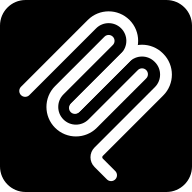
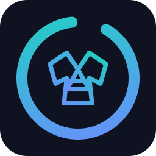
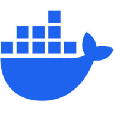
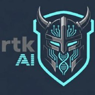
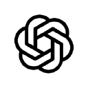
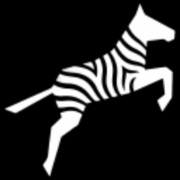
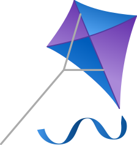

GitHub
Repositories, collaboration and releases for the method and its public tools. GitHub Pages hosts this website.
Good tools grow in good company. Here are the projects we build with, the assistants we target and the ideas that inspire our components.
A technical reading list, not a list of commercial partners. These references imply no affiliation, sponsorship or endorsement. Each project keeps its own identity and license.
From shared source code to local image generation: the building blocks around the method and its tools.
Repositories, collaboration and releases for the method and its public tools. GitHub Pages hosts this website.
The local image engine connected to Local Designer through HTTP or gRPC, used to create this site's illustrations.

The protocol Kimono RAG MCP uses to expose knowledge retrieval tools to compatible assistants.

Our knowledge retrieval component: select relevant project sources and share them with an assistant through MCP.
The JavaScript runtime behind the distribution tooling, Local Designer scripts and Kimono RAG MCP's MCP server.

Container tooling for the Tatami environment and Kimono RAG MCP's shared MCP server.
An editor environment for Copilot integrations and the Kimono RAG MCP extension.

A Rust command-line proxy that compresses shell output before it reaches the model. The Tatami environment ships it and enables it for the assistants that can rewrite commands.
Local retrieval builds on specialized open-source projects. These are implementation building blocks, not external search services: the active embedding policy determines which model and runtime Kimono RAG MCP uses.
The native indexed lexical search engine used to find relevant text and code efficiently.
The Rust semantic search library used by Kimono RAG MCP's native helper, with ONNX embedding support.
Runs the E5 embedding model locally. Kimono RAG MCP selects among the available execution providers by measurement; static models do not require ONNX.
Static embeddings used for code and fast multilingual retrieval: Potion code and multilingual models, with local token lookup rather than transformer inference.
The model hub hosting the pinned model files and their model cards. Downloads require confirmation; indexing and retrieval remain local.
The multilingual embedding model used by the E5 policy, distributed in its quantized ONNX form by Xenova on Hugging Face.
The language behind Kimono RAG MCP's native search and embedding components, alongside its TypeScript MCP server.
Language parsers used by the semantic helper to understand source-code structure when preparing chunks.
AI-KIDO adapts its instructions, skills and agents to different hosts. These are distribution targets, not a promise of identical features or validation on every host.
Anthropic's coding assistant, with a distribution adapted to its instructions, commands, skills and agents.
AI assistance on GitHub and in VS Code; its CLI also provides a terminal-based workflow.
The terminal-based Copilot workflow, also used to measure Kimono RAG MCP's context retrieval gains.

OpenAI's coding agent, targeted through project instructions, workspace skills and custom agents.
A terminal assistant with a dedicated AI-KIDO distribution for workspace skills and agents.

A distribution target for mode-based workflows, and a source of interaction ideas for Tatami's agent interface.
The legacy distribution target for Roo-style instructions, modes and commands.
A distribution target using project instructions, skills and agent definitions.
For installation formats and host-specific conditions, use the AI-KIDO installation guide linked from the Install page.
Projects that informed the Tatami agent interface. Inspiration and adaptation do not imply full feature parity or use of every upstream runtime.
An upstream reference for the agent workspace and conversational interface adapted in Tatami.

A reference for generative interfaces and isolated interactive previews alongside a conversation.
The open-source agent-interface ecosystem behind OpenIntelligentUI, a useful place to explore generative UI ideas.
Project names, logos and site icons identify their respective projects or publishers and remain their owners' property.